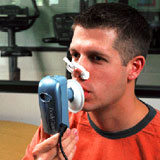

Metabolism Testing
Each individual has a unique Resting Metabolic Rate (RMR). As we age, RMR will decrease, although an effective eating strategy can increase RMR. Whether your goals include weight loss, improved fitness, or even weight maintenance, an accurate metabolism reading is the key to success. The metabolism measurement device is a handheld, portable device that measures oxygen consumption to determine an individual's Metabolism. This information enables our dietitian nutritionist to determine your individual RMR, therefore establish an accurate calorie budget specifically for you so you can successfully achieve your weight and health goals. If one of your goals is to lose weight, we recommend our dietitian nutritionist tests your metabolism at your initial nutrition counseling session and after each 10 pounds you lose.
How do I prepare?
The metabolism measurement may be scheduled at any time but it is important to avoid caffeine and not eat, drink (water is OK) or exercise 4 hours before the test.
How much does the Metabolism Test cost?
Some insurance plans are now covering metabolism testing for specific medical conditions. Please contact us to find out if your plan will cover this test.
Metabolism Testing with Nutrition Assessment (self pay)............................................$225.00
Food Sensitivity Testing
Unfortunately for some, exposure to common foods, chemicals and molds may trigger chronic activation of the immune system resulting in but limited to; migraines, fatigue, skin disorders, stomach distress etc.
Who should take the food sensitivity test?
Inflammation and chronic activation of the immune system due to food intolerance has been linked to: Irritable bowel syndrome, Inflammatory bowel disease and other Irritable bowel digestive disorders, Migraines, Obesity, Chronic Fatigue, ADD, Aching Joints, Skin Disorders, Arthritis and many more.
Getting Started and Cost
When you schedule your initial appointment please let us know if you are interested in the food sensitivity testing and we will help you determine if you are covered for the test and nutrition sessions. There are various test options.
Our dietitian nutritionist can help you determine which test is best for you. Our dietitian nutritionist will then give you a kit you can take to one of our preferred lab locations or will schedule you at one of our office lab draws. We will then schedule a follow- up visit with you to review the results.
|
200 Food Panel
|
$470
|
Comprehensive Wellness 2
- 200 Food Panel, 10 Food Additives + 10 Food Colorings Panel
|
$580
|
Platinum Comprehensive
- 200 Food Panel, 10 Food Additives + 10 Food Colorings Panel, 10 Antibiotics + 10 Anti-Inflammatory Agents Panel, 10 Environmental Chemicals Panel, 20 Molds Panel, 50 Functional Foods and Medicinal Herbs
|
$870
|
For more information about insurance coverage for testing please contact us.
Micronutrient Test
Micronutrient testing is a clinically effective diagnostic tool for the prevention and management of chronic disease conditions. There is overwhelming evidence confirming that nutrient deficiencies have been shown to suppress immune function contributing to chronic disease process including cardiovascular disease, diabetes, arthritis and Alzheimer's.
Micronutrient testing is an innovative assessment of a patient's nutritional status. 33 vitamins, minerals, amino acids and antioxidants are evaluated. For more information about this test speak with our dietitian nutritionist and if they think you are a good candidate they will then give you a kit you can take to one of our preferred lab locations or will schedule you at one of our office lab draws . We will then schedule a follow-up visit with you to review the results and set you up on a supplement regimen with our line of pharmaceutical grade supplements.
Comprehensive Nutrition Panel
(depending on your insurance plan) |
|
$300-$400 |
Heart Risk Assessment Testing
Heart Risk Assessment tests your cholesterol, Vit-D, thyroid, glucose, liver and kidney function. If you have not had these risk factors assessed with in the past year we highly recommend this testing. For more information about this test speak with our dietitian nutritionist and if they think you are a good candidate we will schedule a lab draw in our office and a follow- up visit with you to review the results.
The Heart Risk Assessment will be 100% covered by your insurance carrier.
Lab Locations
You may bring your FOOD SENSITIVITY or MICRONUTRIENT Test Kit to any Concentra Lab location (http://maps.concentra.com/corporate). We also offer monthly blood draws in our Bethesda, McLean and Washington DC offices the second week of the month. Please contact us to schedule a blood draw in our of our office locations.
BLOOD DRAW SCHEDULE
- 3rd Wednesday of each month at our Bethesda, MD office
- 2nd Wednesday of each month at our Washington, DC office 8:00-9:30AM
- 2nd Thursday of each month at our McLean, VA office 8:00-9:30AM
|